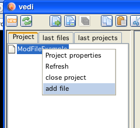
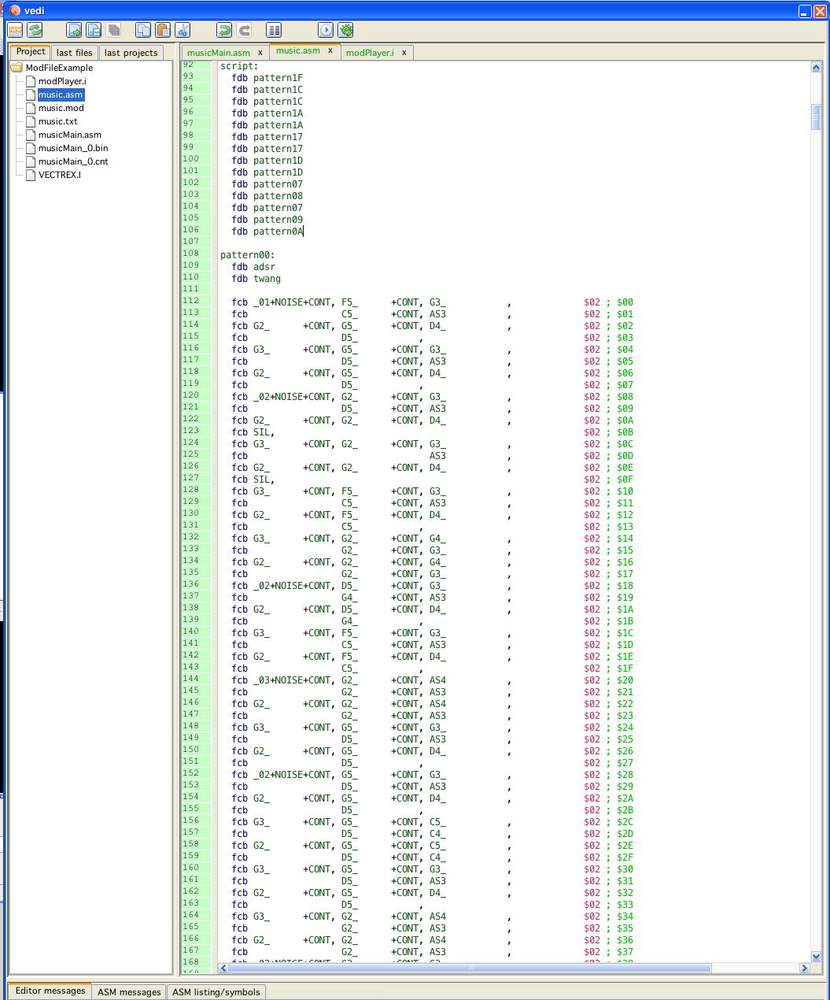

add a mod file
Mod conversion and playing code is generated in vedi, using the popup on the project file tree. By chosing the entry "build vectrex mod" the dialog for mod generation is displayed. (see also the vedi→Mod-Conversion documentation)
The popup menu is only activated while a mod file is selected in the current project. You have to download or create mod files befor you can convert them. If you have a mod file available (e.g. in the following example in the codelib directory→lineart), you can easily add the file to your project. Place the mousecursor over the project name and press the right mouse button.

add a file to the project
Chose "add file"... and navigate in the resulting file choser to the mod file of your desire.
add a mod file
By chosing a file - the file is copied to the project directory and is NOW available.

build mod in vedi
Selecting "build vectrex mod" opens the mod - dialog: (which is explained in "Mod-Conversion")

build mod in vedi
Exiting the above dialog with "create source" will (...hm...) create sources in the current project directory.
(The name of the generated sources are derived from the chosen mod file. In the following it is assumed that the name given is "music.mod".)
The generated sources are accompanied by an example player program.
Following sources are generated:
modPlayer.i
the subroutines which do the actual playing of vectrex "mods"
VECTREX.I
which is needed by the player
music.asm
a file with the actual mod data
musicMain.asm
a "main" file, with an example vectrex runnable "cartridge" file
A vectrex playable binary file can be generated by setting the generate musicMain file as the main file in the project.

set example player as main
The format and the actual play routines are documented in the source code.
Just a few bullet points...
the provided player routine is similar to the BIOS routine.
the data that results in the mod conversion is (apart from the SILENCE value) exactly the same as the BIOS vectrex music data and therefor not further explained here
in addition to the "music" data, the new format supports a ADSR and TWANG table for each voice, the given music structure looks the same, but the expected ADSR and TWANG data should be tripple the size - look at the generated mod files as an example
the generated data is "verbose" and uses named constant labels for note representation and silence values - and is therfor quite readable (and thus resembles a tracker data also)
each mod "pattern" is converted to a vectrex "song"
to play a complete mod, one must play all songs (previous patterns) in the order of the original patterns
for that a song table (previous pattern table) is generated, which keeps all songs (and song repetitions)
the order and setting of songs is not done withing the player, but is kept in the example main program within sixteen lines of code (see: loadmusic )
Playing a mod
Is done exactly (with respecting above mentioned patterns...) like playing a vectrex song. The actual pointer to the current song (pattern) is kept in the (RAM) variable: plr_geilmusik. With that variable set to the right place, you call the new Init_Music_chk_mod befor your recalibration, and after the recalibration the BIOS Do_Sound function.
Done

the complete main, including the pattern -> song ordering

example of a generated data file